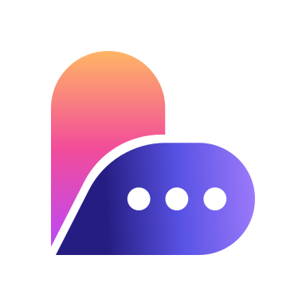

گفتوگویی که از دل برمیآید. اول حرف بزن؛ چهره را گفتوگو روشن میکند.
گفتوگویی که از دل برمیآید. اول حرف بزن؛ چهره را گفتوگو روشن میکند.
قلبی که از حباب گفتوگو ساخته شده؛ بازوی گرم «دل» است و بازوی سرد «گفتوگو». نشانه تنها جایی است که این دو خانوادهٔ رنگی به هم میرسند — و به همین دلیل در هر دو تم یکسان میماند.
سه قفلبندی با سه کار مشخص: Compact (بدون شعار) تنها گونهٔ مجاز در نوار بالای همیشگی است؛ Full (با شعار) برای اسپلش، آنبوردینگ و صفحهٔ درباره است و هرگز در رابط تکرارشونده نمیآید؛ Mark Only برای فاوآیکون، آیکون اپ و حالتهای بارگذاری است.
 Full · horizontal · light · 278.33 × 73.33
Full · horizontal · light · 278.33 × 73.33 Full · horizontal · dark · 278.33 × 73.33Full · vertical · light · 186.67 × 161.33
Full · horizontal · dark · 278.33 × 73.33Full · vertical · light · 186.67 × 161.33 Full · vertical · dark · 186.67 × 161.33
Full · vertical · dark · 186.67 × 161.33
App icon · 384 tile · 16.67% insetآیکون اپ و نشانهٔ درونچیدمانی دو فایل جدا با دو کار جدا هستند و جای یکدیگر را نمیگیرند. آیکون اپ روی کاشی سفید مات ۳۸۴ با ۱۶٫۶۷٪ حاشیه در هر ضلع ساخته شده تا از ماسکهای دایره، مربع گرد و اسکوئرکل جان سالم به در ببرد؛ کاشی در هر دو تم سفید میماند، چون سیستمعامل آن را بیرون از اپ میکشد.
| لوگوتایپ | شعار (فقط Full) | |
|---|---|---|
| روشن | --brand-navy-500 #261D82 · ۱۲٫۷۰:۱ | --brand-navy-400 #4D54A9 · ۶٫۳۶:۱ |
| تیره | --brand-lavender-400 #B99FFF · ۷٫۹۴:۱ | --brand-lavender-500 #A780FE · ۶٫۰۰:۱ |
شعار در هر دو تم عقب مینشیند — در تم تیره یک پله تیرهتر میشود، نه روشنتر: روی سطح تیره، پلهٔ روشنتر بلندتر است و سلسلهمراتب را وارونه میکند. لوگوتایپ تیره به مقدار --nav-active گره خورده است، چون لوگوتایپ و تب فعال دو جایی هستند که هویت سرد برند رابط را حمل میکند.
| قفلبندی | نشانه | فاصلهٔ نشانه تا متن | ترازبندی | حداقل اندازه |
|---|---|---|---|---|
| Compact افقی | قاب ۳۶ × ۳۶ · جوهر ۲۷ × ۲۷ | ۸٫۵u تا جوهر نشانه | فقط تراز پایین — لبهٔ پایین جوهر نشانه روی خط کرسی لوگوتایپ | 32px |
| Full افقی | 73.33 × 73.33 | 0.25 × mark = 18.33px | همارتفاع و وسطچین نسبت به بلوک متن | 36px |
| Compact عمودی | 40 × 40 | 0.20 × mark = 14.67px | محور مشترک، وسطچین | 60px |
| Full عمودی | 73.33 × 73.33 | 0.20 × mark = 14.67px | محور مشترک، وسطچین | 78px |
| Mark only | 36 × 36 | — | — | 36 × 36 |
نشانه سقف سخت است و متن هرگز از آن بلندتر نمیشود. نسبت افقی (۰٫۲۵) عمداً بازتر از عمودی (۰٫۲۰) است: کنار هم، نشانه و متن دو حجم تمامقد مجاورند و کانال میانشان باید درز بخواند نه برخورد؛ در چیدمان عمودی، شکست خط خودش جداکننده است و نسبت بازتر ستون را به دو شیء بیربط میشکند. هرگز مقدار پیکسلی را ثابت نکنید؛ قاعده نسبت است.
حریم آزاد در هر چهار طرف برابر ارتفاع نشانه است. مقیاسگذاری فقط از ارتفاع انجام میشود — عرض دنبال میکند؛ لوگو یک واحد یکپارچه جابهجا میشود و نشانه و متن هرگز جدا از هم تغییر اندازه نمیدهند. در چیدمان راستبهچپ، لوگوتایپ مقدم است و نشانه سمت راست آن — نقطهٔ شروع خواندن.
زیر ۳۶ پیکسل، سه نقطهٔ تایپینگ نشانه به کمتر از ۲ پیکسل میرسند و گونهٔ سادهشده لازم است — که هنوز طراحی نشده است. اندازهٔ ۲۸ × ۲۸ کنار گذاشته شده است.
دوگانگی گرم ↔ سرد هستهٔ رنگ است: گرم (طلایی → صورتی) یعنی کاربر، رساندن، احساس — «دل»؛ سرد (بنفش → نیلی → اسطوخودوسی) یعنی طرف مقابل، پاسخ، ساختار آرام — «گفتوگو».
تنها پالت معتبر، برداشتشده از خود فایل لوگو و در هر دو تم یکسان. هر نام رنگی دیگری در سیستم نام مستعار یکی از این شش است. هر پایه دقیقاً پلهٔ ۵۰۰ رمپ خودش است.
پلهها با درونیابی روشنایی در فضای OKLCH ساخته شدهاند، نه با ترکیب هگز به سمت سفید و سیاه — ترکیب خطی هگز رنگمایه را خم میکند و پلههای ناهموار میدهد. کروما به سمت انتهای روشن کم میشود و هر پله به گمات sRGB نگاشته شده است. هر شش رمپ لنگرهای روشنایی یکسانی دارند، پس شمارهٔ یکسان در همهٔ رمپها تُن همارز میخواند. رمپها مستقل از تماند.
قاعدهٔ کاربرد: ۵۰۰ = مقدار مرجع رنگ · ۴۰۰–۶۰۰ = کاربرد تخت پیشفرض (تب فعال، آیکون نشان) · ۷۰۰–۹۰۰ = پرکردن تینتدار، حالت هاور و حاشیهٔ ظریف روی سطوح روشن · ۱۰۰–۳۰۰ = متن یا آیکون روی همان پرکردنهای ۷۰۰–۹۰۰. پیش از هر color-mix() یا هگز دستیروشنشده، سراغ پلهٔ رمپ بروید — رمپ تنها منبع تغییر تُنال رنگهای برند است. رمپ قواعد بالادست را نقض نمیکند: هیچ پلهای جای گرادیان برند را در حالت برندشده نمیگیرد و هیچ پلهای دکمهٔ اصلی را پر نمیکند.
تصمیم ادغام: تفکیک «روشن = گرم / تیره = سرد» لغو شده است. کاربر همیشه فقط یک تم را تجربه میکند، پس رنگ برندِ وابسته به تم شناخت برند را نصف میکند. یک گرادیان برند وجود دارد، در هر دو تم یکسان. انضباط: یک لحظهٔ گرادیان در هر صفحه — باقی همه سطح تخت یا تینت است.
خنثیها آبیخاکستریاند، نه کاغذ گرم. این نردبان عمداً درونیابی یکنواخت نیست: هر پله وجود دارد چون یک آستانهٔ اندازهگیریشده را رد میکند (۳:۱ برای خطوط کنترل، ۴٫۵:۱ برای متن)؛ نردبان یکنواخت نُه مورد را به اندازهٔ ۰٫۰۳ تا ۰٫۰۵ روشنایی از دست میداد.
| نقش | روشن | تیره |
|---|---|---|
| پسزمینه --bg | #F8FAFC | #121926 |
| کارت --surface-card | #FFFFFF | #1D2432 |
| حاشیهٔ تزئینی --border | #C3CBD6 | #454D5A |
| حاشیهٔ کنترل --border-control | #828B9C · ۳٫۴۳:۱ | #6E7789 · ۳٫۴۵:۱ |
| متن دوم --text-secondary | #5D6675 · ۵٫۵۴:۱ | #9AA4B2 · ۶٫۹۸:۱ |
| کنش اصلی --action-cta | #121926 | #F8FAFC |
قاعدهٔ دکمهٔ اصلی: هر کنش اصلی — دکمه، FAB، اقدام اولیه — رنگ --action-cta است: در روشن #121926 و در تیره #F8FAFC، بدون استثنا. رنگمایهٔ برند هرگز دکمهٔ اصلی را پر نمیکند؛ برند در گرادیان، تینتها و حالتهای انتخاب زندگی میکند.
هر نقش چهار توکن دارد: -fill (پرکردن/آیکون)، -on-fill (متن روی پرکردن)، -surface (تینت بنر) و -text (متن روی تینت یا صفحه). پرکردنها بهتنهایی برای متن کوچک کافی نیستند.
خطا باید جهانشمول و بیابهام قرمز خوانده شود. نزدیکترین پایهٔ برند صورتی است، تنها با ۲۴ درجه اختلاف رنگمایه در تم روشن — درون آستانهٔ ۳۰ درجه — پس هیچ پلهٔ رمپ صورتی نمیتواند نقش خطر را بازی کند بدون آنکه خطا شبیه برند شود؛ و هیچ پایهٔ دیگری اصلاً قرمز نیست (طلایی ۴۷°، بنفش ۶۹°، اسطوخودوسی ۸۴°، نیلی ۱۰۲°). بنابراین خطر یک خانوادهٔ چهارتوکنی مستقل و غیربرند است و صریحاً از قاعدهٔ «اول رمپ» معاف است. سبز موفقیت و حضور آنلاین به همین دلیل رزرو شده است — و به همین دلیل نشان تأیید هویت هرگز سبز نیست.
در مقابل، هشدار و اطلاع ادعایی برای رنگمایهٔ اختصاصی ندارند: پلهٔ رمپ قاعدهٔ تفکیک را رد میکند، پس هشدار از رمپ طلایی و اطلاع از رمپ نیلی/اسطوخودوسی میآید. کهربای پیشین #FEAC6A تنها ۱٫۰۵:۱ از --brand-gold فاصله داشت — دو کهربای همزمان — و بازنشسته شد.
اکسنت (فوکوس)، خطر (خطا) و پریمیوم میتوانند همزمان در یک صفحه باشند، پس هر جفت باید دستکم در یکی از دو محور جدا باشد: ۱٫۵:۱ روشنایی یا ۳۰ درجه رنگمایه. دو محور لازم است چون در تم تیره هر سه باید بهقدر کافی روشن بمانند تا AA را روی #121926 رد کنند و همین روشنایی را فشرده میکند. پسزمینهها همیشه --bg یا --surface-card هستند؛ نه الگوی شلوغ، نه گرادیان تهاجمی. تصاویر تمامقاب فقط پشت اسکریم گرادیانی میآیند.
یک خانواده برای همه چیز: IRANSans Mobile — تیتر، متن و رابط. سیستم دقیقاً یک قلم فارسی دارد و بدون جایگاه مصرف مشخص، خانوادهٔ دوم اضافه نمیشود.
همهٔ توکنهای --ls-* برابر صفرند. تراکینگ اتصال حروف فارسی را میشکند و کلمه را به قطعات جدا تبدیل میکند — حتی در اورلاینها.
گفتوگو را از همینجا شروع کن
فارسی به فضای عمودی بیشتری نیاز دارد: 1.3 نمایشی، 1.45 تیتر، 1.75 متن، 1.9 متن بلند.
وقتی کسی چیزی واقعی مینویسد، خواندنش نباید خستهکننده باشد؛ فضای بین خطوط همان چیزی است که متن فارسی را قابل تنفس میکند.
نیمفاصله در همهٔ ترکیبها: «میشود»، «گفتوگو»، «همصحبت». ویرگول فارسی «،» و پرسش «؟». دنبالههای لاتین و هگز با unicode-bidi:isolate جدا میشوند تا نشانهگذاری نپرد.
ارقام ۰–۹ فارسی همهجا: سن، فاصله، زمان، شمارنده، قیمت. دو استثنای دامنهدار: فیلد شماره تلفن و خانههای کد یکبارمصرف ارقام لاتین دارند، چون هر دو رونویسی از پیامکاند و باید با ارقام خودِ پیامک بخوانند.
۴۱ ساله · ۱۲ کیلومتر · ۹:۴۱ · ۲ گفتگوی تازه
وزن زیر ۴۰۰ در اندازههای کوچک استفاده نمیشود — خوانایی برای کاربر ۴۷ ساله. وزنهای موجود: ۳۰۰ / ۴۰۰ / ۵۰۰ / ۷۰۰ / ۹۰۰.
معمولی · متوسط · ضخیم · سیاه
فارسی زبان مبدأ است، نه ترجمه. direction:rtl پیشفرض سیستم است و ویژگیهای منطقی (margin-inline-start، inset-inline-*، text-align:start) جای left/right را میگیرند. آیکونهای جهتدار (بازگشت، ارسال) آینه میشوند؛ آیکونهای بیجهت (قلب، دوربین، تنظیمات) هرگز.
مجموعهای گزیده که شخصیت برند را نشان میدهد — نه فهرست کامل کتابخانه. هر نمونه در هر دو تم، با محتوای واقعی فارسی.
امضای حرکتی دلتاک باز شدن است، نه سوایپ. هیچ چیز کنار زده نمیشود؛ چیزها آرام باز میشوند و آشکار میگردند.
۸ پیکسل بالا آمدن بههمراه ۰٫۹۸ → ۱ بزرگنمایی و محو شدن به داخل. 560ms · ease-out-soft. کارتها، شیتها و پیامهای تازه با همین منحنی باز میشوند.
امضای محصول: عکسها نرم و محو شروع میشوند و هرچه گفتوگو پیش میرود شفاف میشوند. چهره با حرف زدن به دست میآید — همان قولی که برند میدهد، به زبان حرکت.
سه نقطهٔ نشانگر تایپینگ مستقیم از خود نشانه میآید و موتیف حرکتی تکرارشوندهٔ برند است: نشانگر تایپ، حالت بارگذاری، مکث بین بخشها، ضربآهنگ ساخت در اسلاید. معنیاش همیشه یکی است — «کسی دارد چیزی میگوید». هر نقطه با تأخیر ۱۶۰ میلیثانیه ۴ پیکسل بالا میرود و شفافیتش از ۰٫۴۵ به ۱ میرسد. این تنها آیکون غیرلوسید سیستم است؛ بهجای اسپینر عمومی از آن استفاده کنید.
لمس = کوچک شدن ملایم (scale(0.97))، هرگز جهش سخت. هاور = تیره شدن ظریف یا بلند شدن ۲ پیکسلی کارت. اورشوت فقط بهاندازهای که گرم بخواند، نه بازیگوش. حرکت هیچگاه کاربر را عجول نمیکند — مدتها انسانیاند.